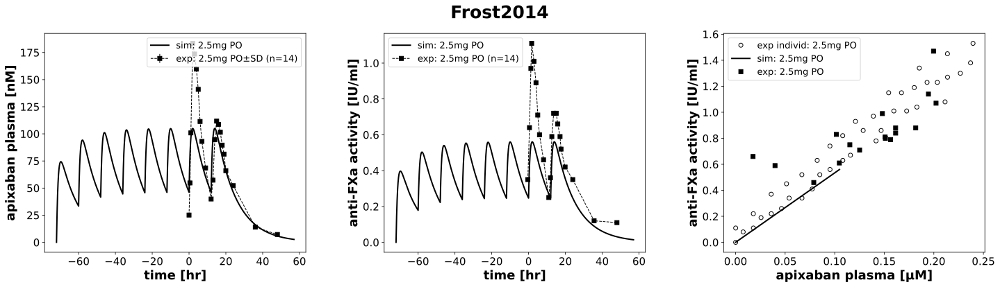

|
 |
../../../../experiments/studies/frost2014.py
from typing import Dict
from sbmlsim.data import DataSet, load_pkdb_dataframe
from sbmlsim.fit import FitMapping, FitData
from sbmlutils.console import console
from pkdb_models.models import apixaban
from pkdb_models.models.apixaban.experiments.base_experiment import (
ApixabanSimulationExperiment,
)
from pkdb_models.models.apixaban.experiments.metadata import Tissue, Route, Dosing, ApplicationForm, Health, \
Fasting, ApixabanMappingMetaData
from sbmlsim.plot import Axis, Figure
from sbmlsim.simulation import Timecourse, TimecourseSim
from pkdb_models.models.apixaban.helpers import run_experiments
class Frost2014(ApixabanSimulationExperiment):
"""Simulation experiment of Frost2014."""
bodyweight = 75.9 #kg
colors = {
"mAPI": "purple",
}
interventions = list(colors.keys())
doses = {
"mAPI": 2.5, #mg
}
infos_pk = {
"[Cve_api]": "apixaban",
}
infos_pd = {
"Anti-factor Xa activity": "antiXa_activity"
}
info_figpd_scatter = {
"apixaban": "antiXa_activity",
"apixaban_mean": "antiXa_activity"
}
def datasets(self) -> Dict[str, DataSet]:
dsets = {}
for fig_id in ["Fig2", "Fig3", "Fig4", "Fig4Mean"]:
df = load_pkdb_dataframe(f"{self.sid}_{fig_id}", data_path=self.data_path)
group_by = "x_label" if fig_id in ["Fig4", "Fig4Mean"] else "label"
for label, df_label in df.groupby(group_by):
dset = DataSet.from_df(df_label, self.ureg)
if label in ["apixaban", "apixaban_mean"]:
dset.unit_conversion("x", 1 / self.Mr.api)
elif "apixaban" in label:
dset.unit_conversion("mean", 1 / self.Mr.api)
if "rivaroxaban" in label or "RIV" in label:
continue
dsets[label] = dset
# console.print(dsets)
return dsets
def simulations(self) -> Dict[str, TimecourseSim]:
Q_ = self.Q_
tcsims = {}
for intervention in self.interventions:
dose = self.doses[intervention]
tc = Timecourse(
start=0,
end=12 * 60, # [min]
steps=1000,
changes={
**self.default_changes(),
"BW": Q_(self.bodyweight, "kg"),
"PODOSE_api": Q_(dose, "mg"),
},
)
tc_end = Timecourse(
start=0,
end=36 * 75, # [min]
steps=1000,
changes={
**self.default_changes(),
"BW": Q_(self.bodyweight, "kg"),
"PODOSE_api": Q_(dose, "mg"),
},
)
tcsims[intervention] = TimecourseSim(
timecourses=[tc] * 3 * 2 + [tc] + [tc_end],
time_offset= -3 * 24 * 60
)
return tcsims
def fit_mappings(self) -> Dict[str, FitMapping]:
mappings = {}
for intervention in self.interventions:
# pharmacokinetics
for k, sid in enumerate(self.infos_pk.keys()):
name = self.infos_pk[sid]
mappings[f"fm_{name}_{intervention}"] = FitMapping(
self,
reference=FitData(
self,
dataset=f"{name}_{intervention}",
xid="time",
yid="mean",
count="count",
),
observable=FitData(
self,
task=f"task_{intervention}",
xid="time",
yid=sid,
),
metadata=ApixabanMappingMetaData(
tissue=Tissue.PLASMA,
route=Route.PO,
application_form=ApplicationForm.TABLET,
dosing= Dosing.MULTIPLE,
health=Health.HEALTHY,
fasting= Fasting.NR,
outlier=True # FIXME: incorrect timepoints
)
)
#PD
for ks, sid in enumerate(self.infos_pd):
name = self.infos_pd[sid]
mappings[f"fm_{intervention}_{name}"] = FitMapping(
self,
reference=FitData(
self,
dataset=f"Xa_{intervention}",
xid="time",
yid="mean",
yid_sd="mean_sd",
count="count",
),
observable=FitData(
self, task=f"task_{intervention}", xid="time", yid=name,
),
metadata=ApixabanMappingMetaData(
tissue=Tissue.PLASMA,
route=Route.PO,
application_form=ApplicationForm.TABLET,
dosing=Dosing.MULTIPLE,
health=Health.HEALTHY,
fasting=Fasting.NR,
outlier = True # FIXME: incorrect timepoints
),
)
return mappings
def figures(self) -> Dict[str, Figure]:
return {
**self.figure(),
}
def figure(self) -> Dict[str, Figure]:
fig = Figure(
experiment=self,
sid="Fig1",
name=f"{self.__class__.__name__}",
num_cols=3,
num_rows=1,
height=self.panel_height,
width=self.panel_width * 3 * 1.05,
)
plots = fig.create_plots(
xaxis=Axis(self.label_time, unit=self.unit_time),
legend=True,
)
plots[0].set_yaxis(self.label_api_plasma, unit="nM")
for intervention in self.interventions:
for k, sid in enumerate(self.infos_pk.keys()):
name = self.infos_pk[sid]
if "apixaban" in name and "API" in intervention:
#simulation
plots[0].add_data(
task=f"task_{intervention}",
xid="time",
yid=sid,
label="sim: 2.5mg PO",
color="black",
)
# data
plots[0].add_data(
dataset=f"{name}_{intervention}",
xid="time",
yid="mean",
yid_sd="mean_sd",
count="count",
label="exp: 2.5mg PO",
color="black",
)
plots[1].set_yaxis(self.labels["antiXa_activity"], unit=self.units["antiXa_activity"])
for intervention in self.interventions:
for k, sid in enumerate(self.infos_pd):
if "API" in intervention:
name = self.infos_pd[sid]
# simulation
plots[1].add_data(
task=f"task_{intervention}",
xid="time",
yid=name,
label="sim: 2.5mg PO",
color="black",
)
# data
plots[1].add_data(
dataset=f"Xa_{intervention}",
xid="time",
yid="mean",
count="count",
label="exp: 2.5mg PO",
color="black",
)
style_mean = {
"kwargs_sim": {
"color": self.fasting_colors["fasted"],
"linestyle": "solid",
},
"kwargs_exp": {
"label": f"exp: 2.5mg PO",
"marker": "s",
"linestyle": "",
"color": self.fasting_colors["fasted"],
"markeredgecolor": "black",
}
}
style_indiv = {
"kwargs_sim": {
"color": "black",
"linestyle": "",
"marker": "o"
},
"kwargs_exp": {
"label": f"exp individ: 2.5mg PO",
"color": "white",
"markeredgecolor": "black",
"marker": "o",
"linestyle": "",
}
}
plots[2].set_xaxis(self.labels["[Cve_api]"], unit=self.units["[Cve_api]"])
plots[2].set_yaxis(self.labels["antiXa_activity"], unit=self.units["antiXa_activity"], scale="linear")
for label, sid in self.info_figpd_scatter.items():
plots[2].set_yaxis(self.labels[sid], unit=self.units[sid], scale="linear")
if "mean" in label:
style = style_mean
else:
style = style_indiv
if "mean" in label:
# simulation
plots[2].add_data(
task=f"task_mAPI",
xid="[Cve_api]",
yid=sid,
label=f"sim: 2.5mg PO",
**style["kwargs_sim"]
)
# data
plots[2].add_data(
dataset=label,
xid="x",
yid="y",
**style["kwargs_exp"]
)
return {
fig.sid: fig,
}
if __name__ == "__main__":
out = apixaban.RESULTS_PATH_SIMULATION / Frost2014.__name__
out.mkdir(parents=True, exist_ok=True)
run_experiments(Frost2014, output_dir=Frost2014.__name__)
{kind=link}